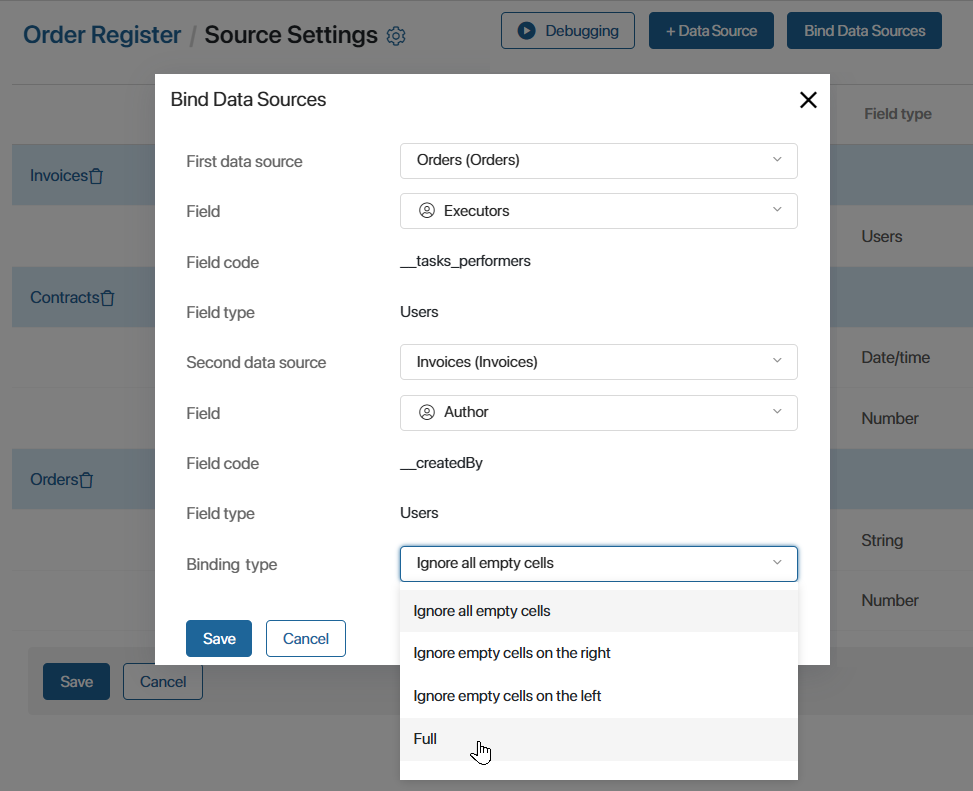
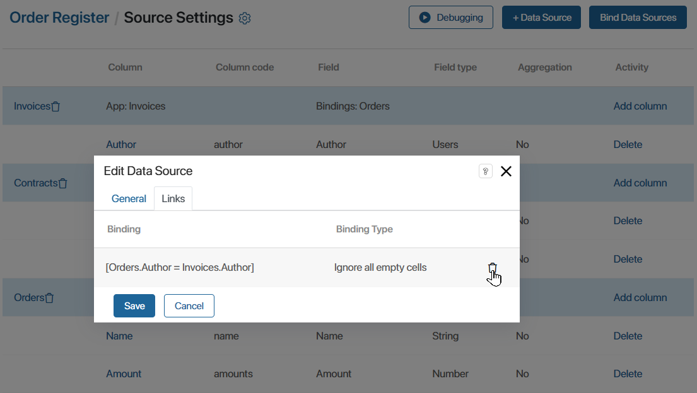
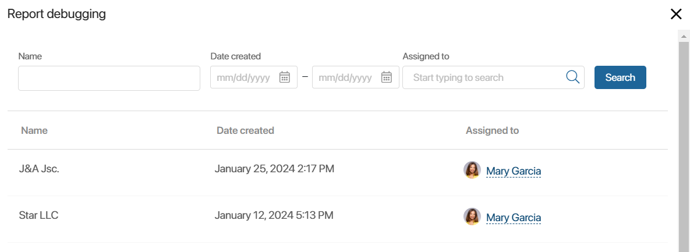

The report table shows the result of combining data from several sources. For this purpose, the data sources are bound to each other in pairs. You can bind sources of the following types:
- App—app.
- Business process—app.
- Business process—business process.
Available ways of binding sources
Sources in the report are bound by using linking fields from their context. For these fields, the search and sort option must be enabled.
The method of binding depends on the specifics of the source context and determines the principle of data selection in the report.
There are several ways to configure the data binding:
- Add a common field of the same type to the forms of both sources.
For example, this can be the code specified in the invoice and contract, or the client company in the order and contract page.
- Create on the form of one source a field of the App type referring to the second source. The system Identifier field is used for the second source in the binding settings.
For example, an invoice page can have a field that contains the Contracts app item. To bind invoices and contracts in a report, different fields are used for binding: the Contract field from the Invoices app and the Identifier system field from the Contracts app.
- Add a field of the Arbitrary app type to one source if it is assumed that users specify a link to an item of the second source in it. The Identifier field is used for the second source.
For example, in the context of the Call process, there is a field that specifies items of several apps: Deals, Leads, and Companies. In the report, the process can be bound with each of the apps if you specify a link of the Arbitrary app type—Identifier.
- Create a field of the App type in the first source and a field of the Arbitrary app type in the second source.
For example, a commercial offer is specified in a deal. The contract page contains all additional documents, among which there is a commercial offer. In the report, the Deals and Contracts apps can be bound by the common item of the commercial offer. For this purpose, the binding of the Appѕ—Arbitrary app type is used.
For more details, see Report customization example.
Bind source apps
Select two apps that you want to bind and complete the following actions:
- On the Source Settings page, in the right corner, click Bind Data Sources. The button appears when two or more sources are added to the list.
- In the opened window, specify the parameters for binding apps.

- First data source, Second data source. Select the sources that will be bound by the condition, for example, Orders and Invoices.
- Field. For the first and second sources specify a field from their context. Only properties for which the search and sort option is enabled are available. The field values will bind records from the sources with each other. For example, for the Orders and Invoices apps, you can specify a common field Contract with the App type.
- Field code, Field type. They are filled in automatically according to the selected property from the source context.
- Binding type. Select the binding condition by which source reports will be displayed in the report table:
- Ignore all empty cells. When binding sources, only those records whose pages have the binding field filled in will appear in the report table. For example, if the executors are not specified in the order or invoice, such binding will be ignored.
- Ignore empty cells on the left. When binding sources, the items of the first data source are checked. If the binding property is not filled in, the record will not be displayed in the table. However, all items of the second source will be included in the report.
- Ignore empty cells on the right. When binding sources, the items of the second data source are checked. If the binding property is not filled in, the record will not be displayed in the table. However, all items of the first source will be included in the report.
- Full. The report displays all data of each source, even if the binding field is not filled in. The type is not available if one of the data sources is a business process.
- Save the source binding settings.
- Create other binding conditions in a similar way. Each source in the list must be bound to at least one other added app.
In the Field column next to the name of the source, all the links created for it will be displayed.
- If you want to change an added binding, you must delete the previous condition and then create it again. To do this, click the name of the source in the list, go to the Links tab in the opened window, and click the recycle bin icon next to the condition.

Debug a report
After configuring the links between the added sources, you can see what the report page will look like. To do this, click the Debugging button on the top panel of the source settings page.
The opened window will display a table with data and filters created from columns with the field search option enabled.

You can close the debugging window and edit the generated report.
To complete the source settings and make the report available to users, click Save under the list of added apps.
Found a typo? Select it and press Ctrl+Enter to send us feedback